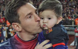
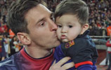

梅西简介
里奥·梅西（Lionel Messi），1987年6月24日出生于圣菲省罗萨里奥市，阿根廷足球运动员。
2000年，梅西加入巴塞罗那俱乐部。2005年，阿根廷青年队夺取世青赛冠军，梅西赢得了金球奖和金靴奖双项大奖。2007年4月18日，梅西在国王杯半决赛对赫塔菲时复制了马拉多纳在世界杯上的连过五人进球。2008年北京奥运会上，梅西随阿根廷国奥队夺取了金牌。2009年底，他当选了欧洲足球先生和世界足球先生。梅西2008-2009赛季率领球队连夺西甲、国王杯和欧冠三个冠军。2011年，梅西获得首届国际足联金球奖，还获得了欧足联欧洲最佳球员。2013年，他以46粒联赛进球的成绩第三次获得欧洲金靴奖奖杯。2014年，梅西随阿根廷队参加2014巴西世界杯。2014年巴西世界杯上，获得世界杯亚军 。
2014年12月20日，梅西被IFFHS评为2013年世界职业联赛的最佳射手奖[2] 。2015年8月，当选欧洲超级杯最佳球员。
2015年8月27日，欧洲冠军联赛小组赛抽签暨欧洲最佳球员颁奖典礼在蒙特卡洛的格里马尔迪会议中心举行，梅西获得欧洲最佳球员。
2016年1月12日，梅西荣膺2015年度FIFA金球奖，五度得奖创纪录。
5岁时梅西开始在当地的街区少年足球队踢球，教练就是他的父亲。
11岁时梅西被诊断出发育荷尔蒙缺乏也就是侏儒症[6] ，会阻碍他的骨骼生长使他无法长高。家里的经济条件难以承受小梅西的治疗费用。梅西的侏儒症并非不可医治，但是注射生长激素每月花费高达900美元，母队纽维尔老伙计不愿意为一个前途未卜的孩子支付这笔费用，一度觊觎梅西的河床队得知他的顽疾后也打消了"挖角"的念头。
2000年，被教练库卡看中，被带到了巴塞罗那，梅西也举家搬迁到西班牙。2000年9月，年仅13岁身高只有140cm的梅西去了巴塞罗那青训营拉玛西亚试训。在试训期间，梅西的表现征服了巴萨青年队教练，他们与梅西签订了一份2012年才会到期的工作合同。巴塞罗那俱乐部在帮助梅西成长方面作出了巨大的努力，由于梅西的骨骺线早已闭合，俱乐部专家专门为他制定了腿部系列运动，帮助梅西生长。
2003年11月16日，16岁的梅西在和波尔图的友谊赛中首次代表巴萨一队出场。
2015年8月27日，欧洲冠军联赛小组赛抽签暨欧洲最佳球员颁奖典礼在蒙特卡洛的格里马尔迪会议中心举行。梅西压过队友苏亚雷斯和C罗，成为2次荣膺欧洲最佳球员的第1人。[4] 同时，梅西首回合对阵拜仁时，晃倒博阿滕打进的那粒精彩入球，获得欧冠赛季最佳进球方面。
2015年11月30日，2015年国际足联金球奖的最终3人名单揭晓。梅西连续第9次入围前三。
2016年1月12日，梅西个人第5次获得金球奖，他也成为历史上第一个5次获得金球奖的球员，他和C罗连续8年垄断FIFA球员大奖。
2016年2月18日，巴萨客场3-1击败希洪竞技，比赛中梅西梅开二度，成为第一位打入西甲300球的球员，并打入巴萨队史西甲第1万球。
。


 


版权所有